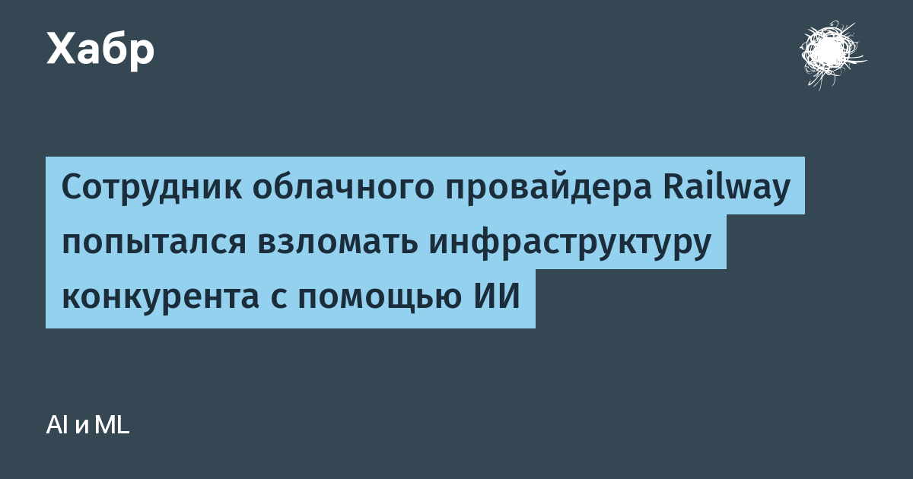

В начале ноября основатель PaaS-платформы Primcloud Джош Мандерс рассказал, что сотрудник конкурирующего облачного провайдера Railway пытался проникнуть в его инфраструктуру. Сделано это было не руками, а ИИ-агентами: по словам Мандерса, они вытащили учётные данные изнутри собственного контейнера, запросили «каждый секрет на платформе — наш и всех остальных клиентов», попробовали метадата-эндпоинт облачного провайдера (классический способ украсть креды хоста), спросили у кластера, что разрешают украденные ключи, подбирали по именам его базы данных и кэши, а потом порт-сканировали всю внутреннюю сеть — все 65 536 адресов, причём дважды. Итого около 24 команд за 15 минут. Ни одна попытка не прошла, ни к одним данным не получили доступ — на этом настаивает сам Мандерс.
Анонимность продержалась недолго: инженер зарегистрировался под выдуманным именем, но приложил личную банковскую карту и ссылку на собственный GitHub. Им оказался Джейк Ранзер, старший продуктовый инженер с шестилетним стажем в Railway. Он быстро признался в соцсетях: «Ага, это действительно был я. Злого умысла не было. Я запускал агентов для регистрации и агентного тестирования на похожих платформах — тестовый стенд пришлось остановить, он определённо сошёл с рельсов и заходил слишком далеко». Основатель и CEO Railway Джейк Купер ограничился заявлением, что компания приняла «подходящие меры» в отношении сотрудника, подчеркнув: он действовал самостоятельно, а не по заданию фирмы. Отдельного официального поста в блоге Railway об инциденте нет — только эти ответы в соцсетях и СМИ.
Показательно, что произошла повторная история: ещё 21 октября сам Railway признал взлом своей платформы, а в предварительном отчёте компания написала, что атаки нашла API-ключи ИИ-провайдеров для «атак дистилляции» моделей. Теперь вот Railway уже с другой стороны баррикады. Юридически «тестирование чужой системы агентом» — не безобидная шалость: несанкционированный доступ к компьютерным системам уголовное преступление в США и Великобритании, плюс возможен гражданский иск к самой компании.
История — готовая иллюстрация к теме «ИИ × ИБ»: автономный агент без жёстких границ превращает «я просто смотрю» в последовательность, которая в логах жертвы не отличима от целевой атаки. Практический вывод простой: тестировать чужие платформы можно только письменно согласованным периметром, а агентам нужны технические ограничители — whitelist хостов, запрет сканов и метадата-эндпоинтов, лимиты команд. «Он сам так решил» — это не оправдание, а дыра в процессе.